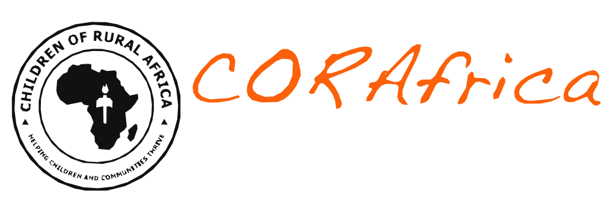

Registered 501(c)(3) · United States
|
Abuja · Ogoja, Cross River State

Who We Are
Our Model
Our Schools
What We Do
Strategic Plan
News
Donate
Education for Africa’s Future
Ten million Nigerian children are out of school.
We build the schools that reach them.
CORAfrica builds and runs primary and secondary schools in rural Nigeria, then surrounds them with the clinics, farms and vocational centres that keep children in class. Founded in 2006. Operating in Cross River and Benue States.
Fund a classroom
Read our strategic plan

“My main mission is to improve the lives of poor children who live in rural areas through education.”
Fr. Peter Abue, Founder
{{s.n}}
{{s.label}}
{{s.note}}
The Community Education Centre
A school alone does not keep a child in school.
Our model puts four components on one site, because the reasons a rural child leaves school are rarely academic. Hunger, illness and a family without income take more children out of class than any exam.
{{p.name}}
{{p.body}}
Our schools
All five schools →

John Stilley Secondary School
Victoria, Ikom · 300+ students · the only secondary school in its community

John Bosco Academy
Adagom, Ogoja · founded 2020 for refugee children from Cameroon

St. Joseph’s, Idum-Mbube
2,000+ pupils educated · school and orphanage · handed to the Diocese of Ogoja